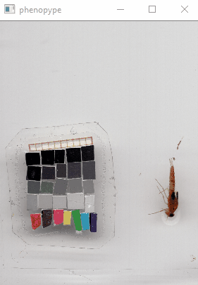
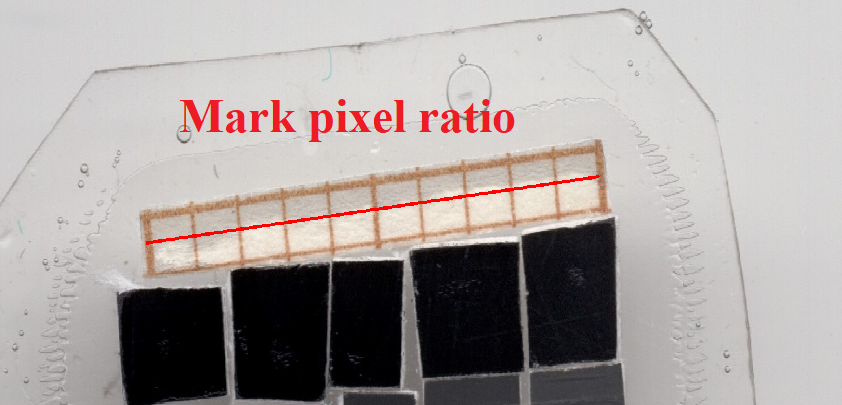

Tutorial 2: loading phenopype, analyzing single images¶
This example demonstrates core phenopype functionality by showing how multiple objects can be found and extracted from images by applying different thresholding algorithms. Furthermore it is shown how a scale is set, i.e. information from size reference cards is digitized, and how parts of images are masked to exclude unwanted objects from the object detection procedure.
The images used for this tutorial contain isopods sitting inside a white tray underneath a camera stand, photopgraphed with a 50 mm lens on a Canon 750D. ** Add images to project * Setting a scale * Detecting objects * Masking images * Detecting many objects * Detecting many objects in many files * Detecting objects on variable background
[1]:
import os
import phenopype as pp
## for this tutorial, you should be in the "tutorial directory of phenopype-master"
#os.getcwd()
#os.chdir("tutorials")
Add images to project¶
In python, we can use import as to load packages and call them with shorter bindings. E.g. we can type pp instead of phenopype everytime we call a function. Next we specificy the folder containing the images, making a project object that contains all the image names and paths. The function project_maker will then collect all files that match your specifications (filetypes or names).
For this first simple example, we only want to include the image named “bug1.jpg”. We can do so using include (or, exclude to skip images whose filenames contain this string). Note that this can be any sub-string and does not have to be the whole filename, so in this case “bug1” will suffice.
[2]:
my_proj = pp.project_maker(image_dir = "images", include=["bug1"], name ="Demo project")
# HINT: image_dir can be relative or absolute
# e.g. something like "your_download_directory//phenopype-master//tutorials//images"
----------------------------------------------------------------
Project settings
================
Project name: Demo project
Image directory: images
Search mode: dir
Filetypes: []
Include:['bug1']
Exclude: []
----------------------------------------------------------------
Search returned following files:
['bug1.jpg']
Let’s have a quick look at the image using the collected absolute filepaths (accessible from the my_proj object) and the phenopye function show_img (contains all the opencv GUI controls explained in the python intro. Close the image by hitting enter or closing the window:
[3]:
img_path = my_proj.filepaths[0]
pp.show_img(img_path)
Setting a scale¶
Our image contains an organism, as well as a reference card for colour and size. To make our measurements meaningful, we need to know the the pixel-to-mm-ratio. To do so we we load the image into the scale_maker, zoom into the scale area for better visibility, and mark the distance we specifiy - in this case 10 mm.
HINT: The default mode for marking the scale is by dragging a box/rectangle around the object. However, you can also specify points to draw a polygon.
 |
 |
[9]:
scale = pp.scale_maker(image=img_path, value=10, unit="mm", zoom=True, show=True)
Mark the outline of the scale by left clicking, remove points by right clicking, finish with enter.
Finished, scale outline drawn. Now add the scale by clicking on two points with a known distance between them:
Adding point 1 of 2 to scale
Adding point 2 of 2 to scale
------------------------------------------------
Finished - your scale has 956 pixel per 10 mm.
------------------------------------------------
We can access the scale by calling its variable measured, which always will give you the ratio of pixels per 1 mm.
[5]:
scale.measured
[5]:
95.3
Detecting objects¶
Finding objects inside an image is a core function of phenopype. Results depend on how “good” your pictures are with respect to foreground contrast of your objects, homogeneity of your background, and overall illumination and resolution. The pictures we have loaded above are pretty good for that purpose. However, don’t give up just now if your images have less ideal contrast or a noisy background. phenopype comes with a flavor of different preprossing strategies and well established
thresholding algorithms in opencv, wrapped into a simple method: the object_finder.
[6]:
help(pp.object_finder)
Help on class object_finder in module phenopype.base:
class object_finder(builtins.object)
| object_finder(image)
|
| Initialize object finder class, loads image.
|
| Parameters
| ----------
|
| image: str or array
| absolute or relative path to OR numpy array of image containing the objects
|
| Methods defined here:
|
| __init__(self, image)
| Initialize self. See help(type(self)) for accurate signature.
|
| find_objects(self, **kwargs)
| Method in object finder class: find objects in colour or grayscale images using thresholding
|
| Parameters
| ----------
| thresholding: list (default: ["otsu"])
| determines the type of thresholding:
| - "binary" needs an interger for the threshold value (default: 127),
| - "adaptive" needs odd integer for blocksize (default: 99) and constant to be subtracted (default 1)
| - for more info see https://docs.opencv.org/3.4.4/d7/d4d/tutorial_py_thresholding.html
| operations: list (default: ["diameter", "area"])
| determines the type of operations to be performed on the detected objects:
| - "diameter" of the bounding circle of our object
| - "area" within the contour of our object
| - "grayscale" mean and standard deviation of grayscale pixel values inside the object contours
| - "bgr" mean and standard deviation of blue, green and red pixel values inside the object contours
| - "skeletonize" attempts to transform object into a skeleton form using the technique of Zhang-Suen. WARNING: can be slow for large objects
| scale: num (1)
| pixel to mm-ratio
| mode: str (default: "multiple")
| detect all, or only ["single"] largest object or multiple
| mask: list
| phenoype mask-objects (lists of boolean mask, label, and include-argument) to include or exclude an area from the procedure
| show: bool (default: True)
| display the detection results
| blur1: int
| first pass blurring kernel size (before thresholding)
| blur2: list
| second pass blurring kernel size (after thresholding) and binary thresholding value (default 127)
| min_diam: int
| minimum diameter (longest distance in contour) in pixels for objects to be included (default: 0)
| min_area: int
| minimum contour area in pixels for objects to be included (default: 0)
| corr_factor: int
| factor (in px) to add to (positive int) or subtract from (negative int) object (default: 0)
| resize: in (0.1-1)
| resize image to speed up detection process - usually not recommended
| gray_value_ref: int (0-255)
| reference gray scale value to adjust the given picture's histogram to
|
| ----------------------------------------------------------------------
| Data descriptors defined here:
|
| __dict__
| dictionary for instance variables (if defined)
|
| __weakref__
| list of weak references to the object (if defined)
Just like project_maker or scale_maker, object_finder is a class, that means we have to initialize it first, and then run the actual method. After initializing it by giving it a path to our image (alternatively: an array), we can detect objects using find_objects.
[7]:
of = pp.object_finder(image=img_path)
results = of.find_objects()
Warning - no scale specified
diameter area
idx
1 7 24
2 19 67
3 15 8
4 17 16
5 13 16
.. ... ...
169 48 371
170 24 46
171 74 111
172 12 19
173 9 13
[173 rows x 2 columns]
----------------------------------------------------------------
Found 1259 objects in bug1.jpg:
==> 173 are valid objects
- 1086 are noise
----------------------------------------------------------------
Masking images¶
Ok, this is not right, the algorithm is picking up our reference card. We need to only include our organism in our image by applying a mask to be included. This we can do with the class mask_maker that we need to initialize with a picture, and then apply the draw_mask() function. This method works cumulatively, meaning that we can include or exclude multiple areas after the first mask is drawn.
HINT: We can use "rectangle" or "polygon" mode to draw our mask.
[10]:
mm = pp.mask_maker(img_path)
mask1 = mm.draw_mask(label="1", mode="rectangle", show=True)
mask2 = mm.draw_mask(label="2", mode="polygon", show=True, include=True)
mask3 = mm.draw_mask(label="3", mode="rectangle", show=True, include=False)
Mark the outline of your arena, i.e. what you want to include in the image analysis by left clicking, finish with enter.
Mark the outline of your arena, i.e. what you want to include in the image analysis by left clicking, finish with enter.
Adding point #1 with position(2127,866) to arena
Adding point #2 with position(1821,2193) to arena
Adding point #3 with position(1400,1253) to arena
Mark the outline of your arena, i.e. what you want to include in the image analysis by left clicking, finish with enter.
The masks can the be passed on the the object_finder:
[ ]:
results = of.find_objects(mask=[mask1, mask2, mask3]) # NOTE: your mask should be inside a list -> []
The next problem is, that our organism is being recognized as many small objects. If we only have one organism in our image, we can switch to the mode “single”. Also, we want to disregard legs and antenna. The removal of small structures can be accomplished by adding some gaussian noise to the image with the blur1 variable (blur1 = first pass blurring, blur2 = second pass blurring). The provided number of the size of your blur kernel in pixels (bigger = more blurred). At this
point we should also include the scale we measured earlier:
[ ]:
results = of.find_objects(mask=[mask1, mask2, mask3], mode="single", blur1=25, scale=scale.measured)
What we see in the console is just for evalution and does not show us much information. To see at what we actually measured, let’s look at the results object, which contains some metadata, and the phenotypic information.
[ ]:
results
Variable |
Description |
|---|---|
filename |
name of the image file |
date_taken |
timestamp of when your image was taken. (y-m-d h-m-s), or NA |
date_analyzed |
timestamp of when your image was analyzed (i.e., current time). (y-m-d h-m-s) |
idx |
if you have multiple objects in your image, this will correspond to the labels |
resize_factor |
sometimes it is necessary to resize large images. this keeps track of it |
scale |
the provided scale, number of pixels per 1 mm |
diameter |
from the bounding circle of our object |
area |
inside the contour of our object |
We can measure aditional parameters that we pass on using the operations argument - e.g. “bgr”, which returns the mean values for blue, green, and red pixels (for a full list of operations, see help(pp.object_finder)).
[ ]:
results = of.find_objects(mask=[mask1, mask2, mask3], mode="single", blur1=25, scale=scale.measured, operations = ["grayscale", "bgr"])
results
We can keep running the find_objects method until we are happy with our results. Once that is the case, we save both the results data frame using save_csv; and the processed image, which we get by accessing image_processed in the object_finder object, and saving it with save_img. As name we use the filename that we get from the my_proj object.
Note that by default, text files and images are overwritten if they already exists in the specified directory. Also, if a directory does not exists, it will be created.
[ ]:
img_name = my_proj.filenames[0]
pp.save_csv(df=results, name=img_name, save_dir="images_out")
pp.save_img(image=of.image_processed, name=img_name, save_dir="images_out", resize=0.25)
# NOTE: you can resize images with the "resize" argument to save space
You now should be able to handle the object_finder class. Below I will introduce more examples and processing steps that can improve results.
Detecting many objects¶
For this example we will load a different set of images.
[ ]:
my_proj = pp.project_maker(image_dir = "images", include=["isopods"])
[ ]:
img_path = my_proj.filepaths[0] # we only use the first image
scale = pp.scale_maker(image=img_path, value=10, unit="mm", zoom=True, show=True) # measure scale
[ ]:
of = pp.object_finder(img_path)
results = of.find_objects(scale=scale.measured)
Looks terrible. We need to exclude areas, and pass the mask on to find_objects.
[ ]:
mask = pp.mask_maker(img_path)
mask1 = mask.draw_mask(label="tray", mode="rectangle", include=True) # include the tray area
mask2 = mask.draw_mask(label="scale", mode="rectangle", show=True, include=False) # exclude the scale inside the tray area
[ ]:
results = of.find_objects(mask=[mask1, mask2], scale=scale.measured)
Still not great, there is a lot of noise and some bugs are not identified properly. We can try some blurring and implementing a minimum diameter.
[ ]:
results = of.find_objects(mask=[mask1, mask2], scale=scale.measured, min_diam=10, blur1=10)
Blurring tends to “eat away” the object borders. We can counteract this by adding a “correction factor” that will add some more area to our objects. corr_factor is a list that takes three arguments: [shape, value, iterations]. See help(object_finder) for details.
Since we add more “flesh to the bone”, we can also increase the minimum diameter of our objects and also introduce min_area to get rid of those small particles. Note that the preview that gets put out after every find_object run can help you specify those parameters. E.g. if most objects have around 100 pixels and an area >1000 pixels, we want to set the threshold so that the majority stays in, but the smallest objects get excluded.
[ ]:
results = of.find_objects(mask=[mask1, mask2], scale=scale.measured, min_diam=20,min_area=1100, blur1=10, corr_factor=["ellipse",10,1])
Ok, this looks good, let’s save the results and the processed image for reference, the idx column corresponds to the labels inside the image.
[ ]:
img_name = my_proj.filenames[0]
pp.save_csv(df=results, name=img_name, save_dir="images_out")
pp.save_img(image=of.image_processed, name=img_name, save_dir="images_out", resize=0.5)
Detecting many objects in many files¶
Let’s do this for all the files in our project. Because the tray on which the bugs sit isn’t perfectly centered in each picture, we should mark the boundaries with the polygon_maker. However, because the scale is the same in each picture, we can use the detect method from the scale_maker class. detect uses the accelerated KAZE (AKAZE: https://www.youtube.com/watch?v=lI50PGr2TEU) algorithm for feature registration and matching. I will expand more on this in a future version of the
tutorial.
[ ]:
# MAKE FILE LIST
my_proj = pp.project_maker(image_dir = "images", include=["isopods"])
[ ]:
# MARK SCALE ONCE, GET PIXEL RATIO
img_path = my_proj.filepaths[0] # we only use the first image
scale = pp.scale_maker(image=img_path, value=10, unit="mm", zoom=True, show=True) # measure scale
[ ]:
# MARK TRAY AREA ONLY, SCALE WILL BE AUTOMATICALLY DETECTED. CONTINUE WITH ENTER
# loop through both the projects filepaths and filenames using "zip":
for path, name in zip(my_proj.filepaths, my_proj.filenames):
# mark the tray for each image. if your picture doesn't change dramatically, you can skip this
arena = pp.mask_maker(path)
mask1 = arena.draw_mask(label="tray", mode="rectangle", show=True)
# this is a scale detector! if your scale is identical, the scale-finder will find it!
mask2, scale.current = scale.detect(path, min_matches=10, show=True)
# we use the optimal settings we found above
of = pp.object_finder(path)
results = of.find_objects(mask=[mask1, mask2], scale=scale.measured, min_diam=20,min_area=1100, blur1=10, corr_factor=["ellipse",10,1])
# save after every iteration
pp.save_csv(results, name, "tutorials\\images_out")
pp.save_img(of.image_processed, name, "tutorials\\images_out", resize=0.5)
Detect objects on variable background¶
In this example, the background is not homogenous enough for the standard thresholding algorithm, so we need to use different settings.
[ ]:
my_proj = pp.project_maker("images", include=["bug2"])
[ ]:
of = pp.object_finder(image=my_proj.filepaths[0])
results = of.find_objects(mode="single", blur1=10) # does not work
The algorithm fails because the image is full gradients that are invisible to us - we can make them visible if we change the algorithm, and binarize the image.
[ ]:
results = of.find_objects(mode="single", method=["adaptive", 99,1], show=False)
pp.show_img(of.thresh)
[ ]:
# and now with proper output
results = of.find_objects(mode="single", blur1=10, method=["adaptive", 99,3]) # does work a lot better
[ ]:
pp.save_csv(results, my_proj.filenames[0], "images_out")
pp.save_img(of.image_processed, my_proj.filenames[0], "images_out", resize=0.5)